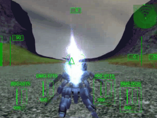

| Program＆3D-model create： | Jey-en |
| Mechanic Design： | yoshimi-13 |
| Bravo 1： | 飛鷺 銀 |
| Bravo 2： | 加賀美 祥 |
| Alpha 1： | AKIRA |
| Big-Ear 1： | 岡松 丈 |
| Big-Ear 2： | 雪城あゆむ |
| Enemy 1： | 哲也 |
| Enemy 2： | 逢千 鏡介 |
| BGM： | Presence of Music |
| Sound Volumes | ||
| Charactor Voice Volume： | ||
| Sound Effect Volume： | ||
| BGM Volume： | ||
| Language (text) | ||
| 基本操作 | |
| マウス移動 | 視点の操作 |
| Wキー | 前進 |
| Sキー | 後退 |
| Aキー | 左移動 |
| Dキー | 右移動 |
| Shift または Ctrl | ブースター |
| 攻撃動作 | |
| 左ボタン （遠距離） |
キャノン砲 |
| 左ボタン （近距離） |
マシンガン （自動切り替え） |
| 右ボタン１ | ミサイル 押し続けでロック増加(最大4) 離すと発射 |
| 右ボタン２ | 遠距離大型キャノン砲
押し続けでズーム：離すと発射 |
| マウスホイール： | 右ボタン使用武器の切り替え |
| Basic Move | |
| Mouse Move | Movement point of view |
| W key | Move Forward |
| S key | Move Back |
| A key | Move Left |
| D key | Move Right |
| Shift or Ctrl | Use Booster |
| How to Attack | |
| Left Button (Out Range) |
Hand Cannon |
| Left Button (Close Range) |
Machine-Gun (Auto Change) |
| Right Button 1 | Missile Hold Press:Add Lock-On Release:firing. |
| Right Button 2 | Long Range Chanon
Hold Press:Zoom-in Release:firing. |
| mouse wheel： | Change Right-button Weapon |
| ブースト移動 |
| Wキー（前進）を押しながら Shiftキー を押すことで、 高速なブースト移動をすることができます。 △の目標地点まで移動しましょう。  |
| Booster Move |
| W key + Shift key, Start-up Booster. That's High-speed move. Move to marker △. |
| Mission Select | ||